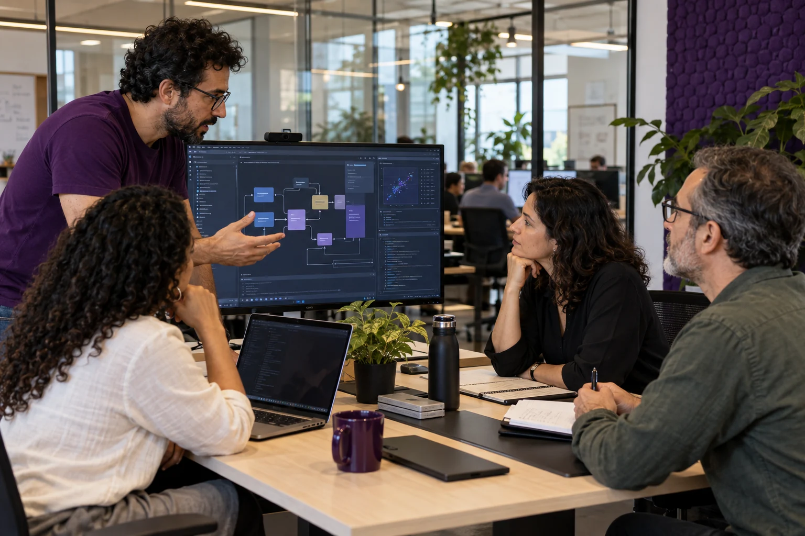
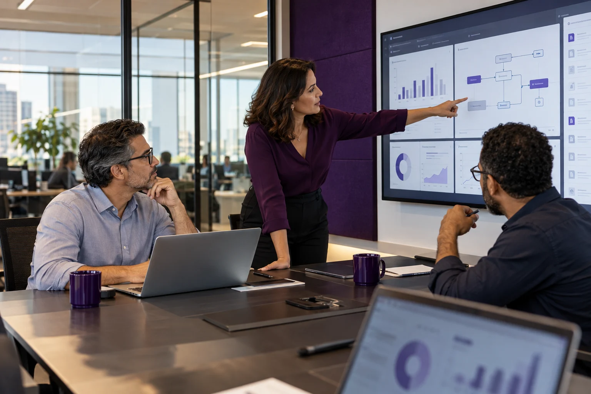
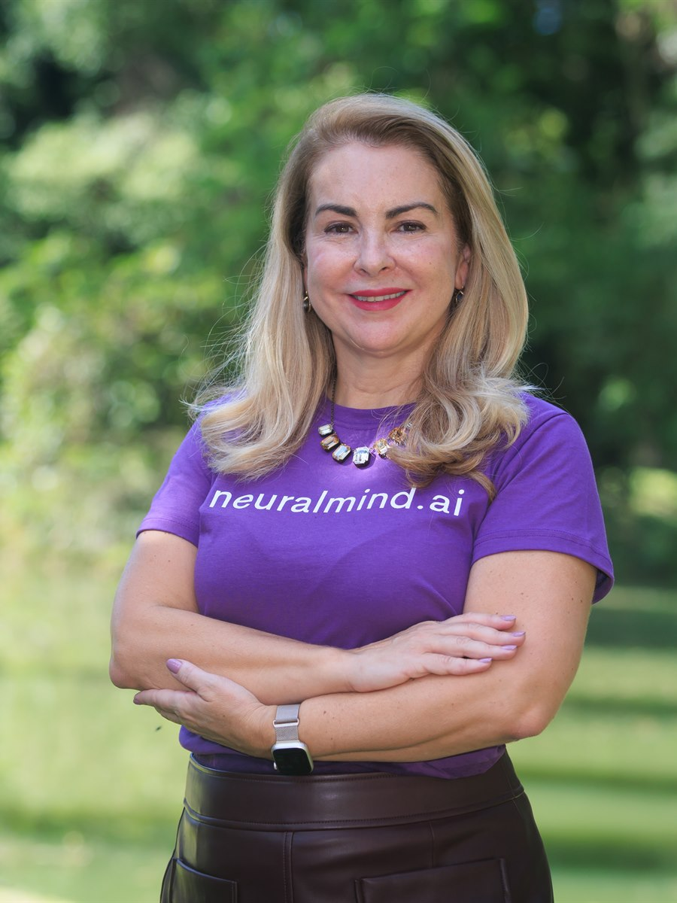
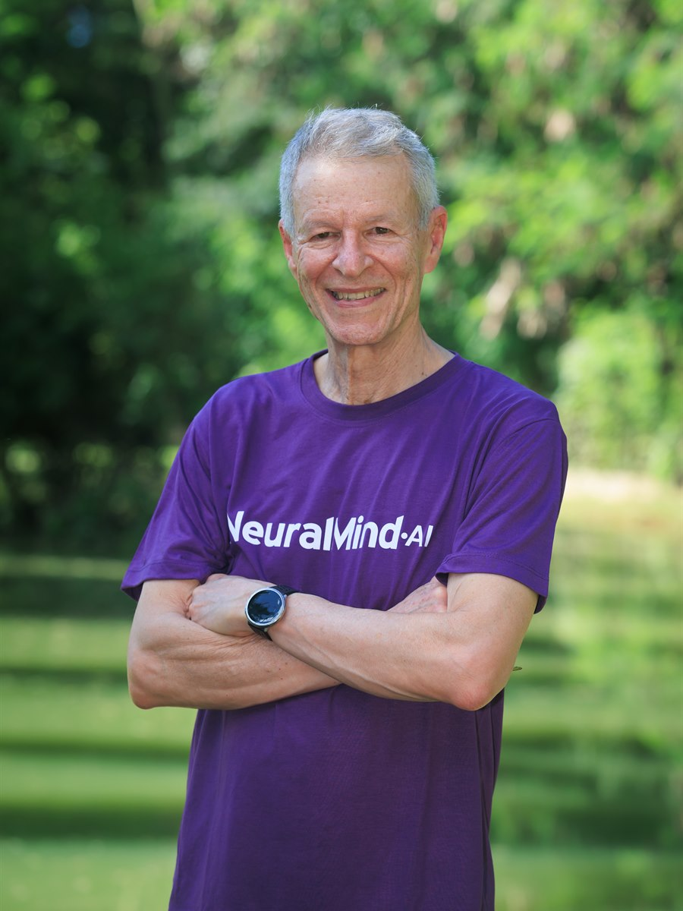
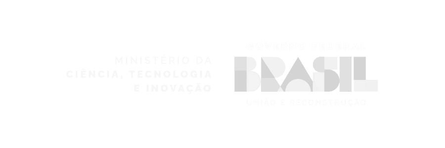
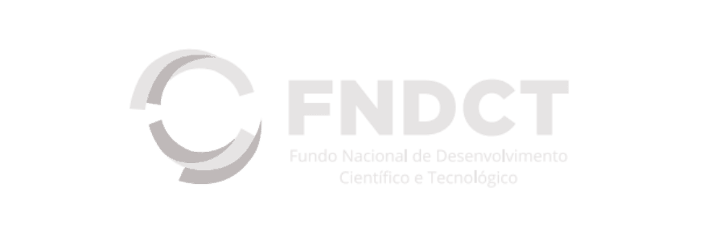
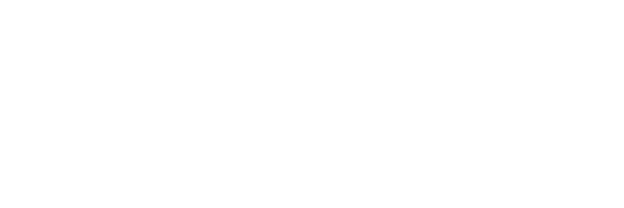
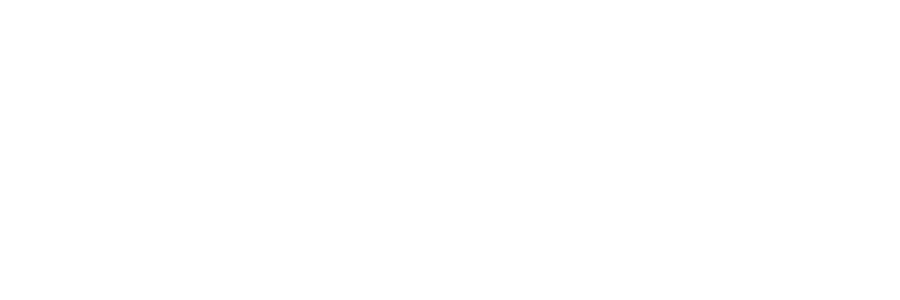
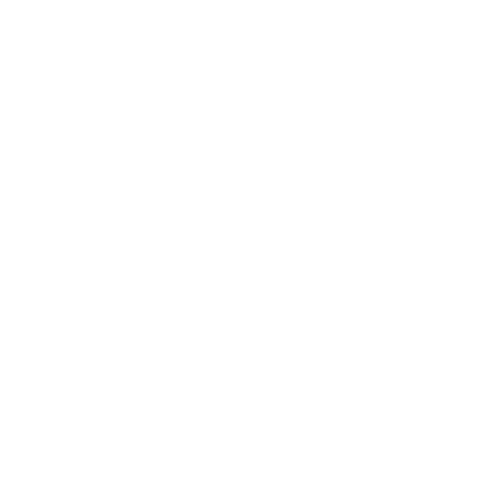
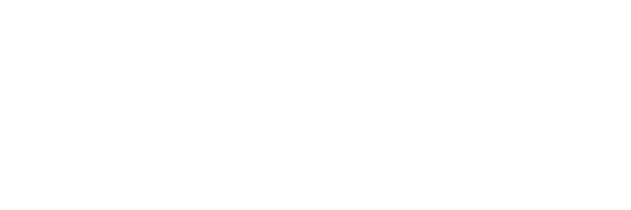

PRIOSCAN / HCPA
−96%
no tempo mediano até o laudo dos casos com achados alarmantes
19h48para 45 min
Desenvolvemos tecnologia avançada de IA para conectar conhecimento, automatizar análises complexas e apoiar decisões em ambientes corporativos e setores críticos.
RESULTADOS EM OPERAÇÃO
PRIOSCAN / HCPA
−96%
19h48para 45 min
ASSERTIA / TCU
+80%
Apoio à análise processual.
Cada indicador se refere ao contexto do respectivo projeto.
Confiança construída em operações reais.
Combinamos pesquisa avançada, modelos especializados e engenharia de IA para construir soluções que interpretam informações complexas, incorporam conhecimento de domínio e geram valor em operações reais.

NOSSOS PRODUTOS
Soluções para conectar conhecimento, transformar operações jurídicas e priorizar decisões clínicas.
01 / INTELIGÊNCIA CORPORATIVA
Uma plataforma que integra documentos, sistemas e bases corporativas para transformar conhecimento disperso em respostas contextualizadas, análises e produtividade.

02 / INTELIGÊNCIA JURÍDICA E REGULATÓRIA
Do pré-contencioso ao consultivo e contencioso, uma plataforma para analisar demandas, elaborar respostas e pareceres, gerenciar riscos e transformar dados jurídicos em inteligência estratégica.
Conheça a plataforma SofIA03 / INTELIGÊNCIA CLÍNICA
IA que combina a análise de radiografias e informações clínicas para identificar achados alarmantes e priorizar exames que exigem atenção, integrada ao fluxo dos profissionais de saúde.
Conheça o PrioScanSOBRE A NEURALMIND
Desde 2017, unimos pesquisa e engenharia para desenvolver IA aplicada aos desafios das empresas.
Empresa filha da Unicamp, com pesquisa aplicada ao dia a dia das empresas.
do time tem pós-graduação em IA, entre pesquisadores, engenheiros e especialistas.
MODELOS DESENVOLVIDOS NO BRASIL
Modelos BERT treinados em português brasileiro para identificar entidades, comparar frases e analisar relações entre textos.
Open source · Licença MIT · Publicado em 2020
Família de modelos para aplicações jurídicas brasileiras, desenvolvida pela NeuralMind em parceria com o Escavador.
FUNDADORES

COFUNDADORA & CEO
Executiva com experiência em negócios e gestão nas indústrias automotiva e de energia, transferência de tecnologia e novos negócios. Trajetória na Inova Unicamp e no CNPEM.

COFUNDADOR & CTO
Professor da Unicamp, com mais de 30 anos de pesquisa em visão computacional e IA. Reconhecido entre os melhores cientistas do mundo pela Research.com em 2023.
REPERCUSSÃO
UM ECOSSISTEMA QUE IMPULSIONA A INOVAÇÃO






CADA DESAFIO COMEÇA COM UMA CONVERSA.